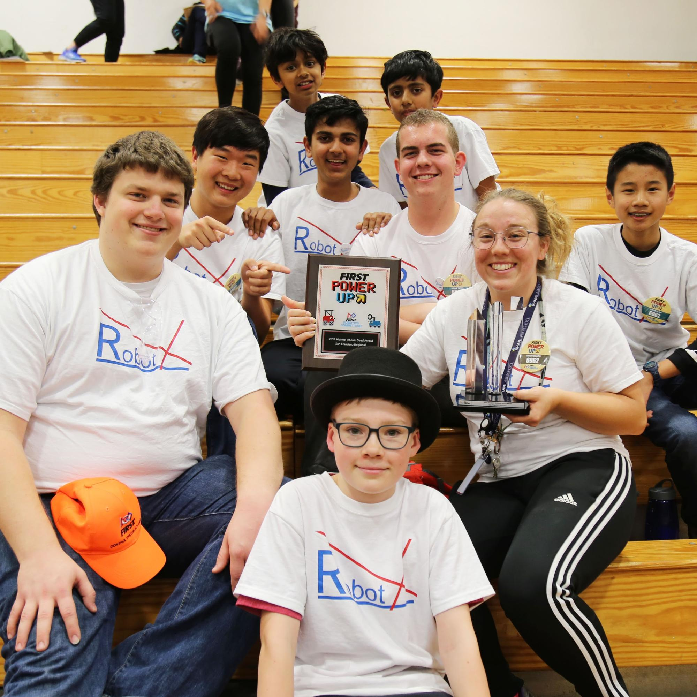
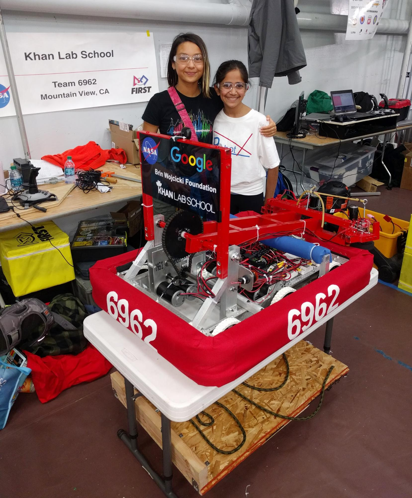

About Us

RobotX is a team of young and aspiring students based at Khan Lab School in Mountain View, California. The 2019 season will be our second year competing in FIRST Robotics. Hands-on learning and passion-driven work are often encouraged at KLS. Because of our large number of STEM-passionate students, we created a new mission for RobotX. To inspire and expose others, into the exploration of science, mathematics, computer science, and technology. We hope to represent our self-driven school in FRC competitions and share our experiences and knowledge with the rest of our community.
Our Mission

Sal Khan, the founder of KLS, supports mixed age learning. We have students as young as five and as old as sixteen interested in the STEM field. By competing, students of all ages are getting exposure to not only engineering skills but critical thinking, problem-solving, financing, teamwork, leadership, marketing, and presentation skills.
Our Schedule

All members of RobotX dedicate evenings after school and weekends outside of school on a year-round schedule. We spend our time designing, prototyping, programing, and building our robot. Outside of the build season we host workshops to become familiar with the team and share our experiences and lessons from previous years. The workshops are offered to a wide variety of students from middle school to elementary school. We also maximize this off-time to prepare, organize, and plan for the upcoming season. The youngest KLS students, five years old, to the oldest, 16 years old, are often seen exploring the STEM lab where our creations are being built.
Support Us

RobotX is unique among other teams because our goal isn’t just to win and to learn, but also to spread our passion for the science, engineering, and math fields to the next generation. This year the team needs to raise $15,000 and hope that you and your organization can assist us in meeting this goal. Your contribution will not only go towards directly funding our team, but also symbolize your support for the long-term investment for the young and aspiring students. Additionally, sponsors can receive updates on the team’s progress and details on the robotics experience.